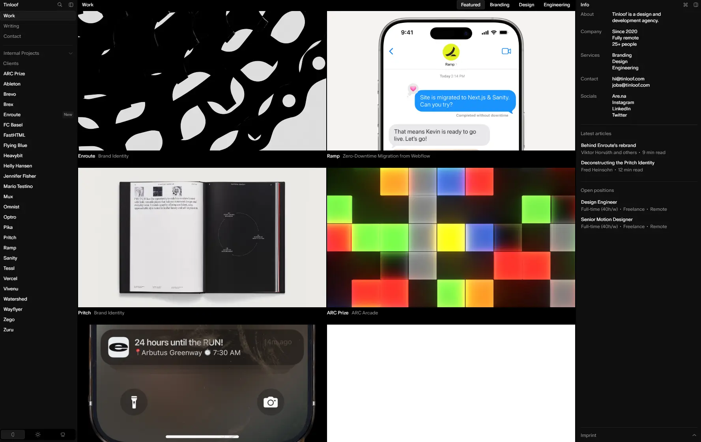

Tinloof
- Агентства и студии
- Студия разработки
- Дизайн-студия
- Утилитарный техно
- Минимализм
- Сайт жив

Что это
Сайт берлинского агентства дизайна и разработки, построенный как рабочая панель: слева навигация, в центре крупные кейсы, справа пояснения и служебная информация. Строгая мелкая типографика соседствует с большими видео о работах. Утилитарный технический сайт берлинского агентства дизайна и разработки. Мелкая типографика и крупные медиакарточки.
Чем интересен
- Стек — Astro с React-островами, а не SPA: страница приходит готовым HTML, тяжёлый клиентский рантайм не грузится.
- Три режима темы (system / light / dark) плюс отдельный страничный режим «pritch» с красной палитрой #C9000D, который включается только на одной статье.
- Нестандартно лёгкие начертания как приём: базовый вес шрифта 325 в тёмной теме и 335 в светлой, под подменный Arial подобран size-adjust, чтобы вёрстка не сдвигалась.
- Вся анимация сделана на CSS-переходах с собственными spring-классами и View Transitions: GSAP, Three.js, Lottie и Framer Motion в разметке не найдены.
- Импрессум спрятан в сворачиваемый блок в боковой панели, политики конфиденциальности и cookie-баннера нет — при подключённом PostHog с person_profiles: 'identified_only' и проксированием через поддомен s.tinloof.com.
Паспорт
- Домен
- tinloof.com
- Тип сайта
- Многостраничный
- Категории
- Агентства и студии
- Подкатегории
- Студия разработки, Дизайн-студия
- Для кого
- Дизайнерам, Разработчикам, Агентствам
- Стиль
- Утилитарный техно, Минимализм
- Язык
- Английский
- Страна
- Германия, Берлин
- Автор
- Tinloof
- Год
- 2020
- Добавлен в коллекцию
- 30.09.2026
Палитра
-
#0A0A0A— 49% кадра -
#F6F6F5— 26% кадра -
#39332F— 11% кадра -
#D9D9D9— 4% кадра -
#918C88— 2% кадра
- Режим
- Тёмная
- Цвет фона
- Нейтральный
Технические факты
- HTTPS
- да
- Meta viewport
- да
- Title
- Work (4 симв.)
- Description
- Design and development agency. (30 симв.)
- Open Graph
- да
- Структурированные данные
- нет
- Sitemap
- https://tinloof.com/sitemap.xml — 24 URL, lastmod только у /contact
- Robots
- есть: Allow: /, закрыты /api/, /design/, /docs/
- Аналитика
- PostHog (api_host s.tinloof.com, ui_host eu.posthog.com)
- Проверено ссылок
- 11
- Битые ссылки
- нет
- Контакты
- hi@tinloof.com, jobs@tinloof.com, соцсети Are.na, Instagram, LinkedIn, Twitter
- Юридическая информация
- импрессум в аккордеоне: Bärbel-Bohley-Ring 8, 13355 Berlin; VAT DE345235005; HRB 231289 B. Политики конфиденциальности нет
Технологии с доказательствами
- Astro — ассеты в /_astro/, meta astro-view-transitions-enabled, data-astro-transition-scope на <html>
- React (острова) — 73 тега <astro-island> с renderer-url=/ _astro/client.*.js; гидратация client:load / visible / only
- Astro View Transitions — подключён ClientRouter.astro_astro_type_script_index_0_lang.*.js, в CSS ::view-transition-name по data-astro-transition-scope
- Sanity (headless CMS) — в пропсах островов документы вида "_type":"caseStudy", "_status":"published", "_id":"ast_…"
- Tailwind CSS — 771 совпадение --tw- в CSS, 5 блоков @layer, утилитарные классы в разметке; точная версия не подтверждена
- PostHog — posthog.init('phc_…', { api_host: 'https://s.tinloof.com', ui_host: 'https://eu.posthog.com' })
- Собственный CDN медиа — все видео и постеры с https://cdn.krud.app/, 6 тегов <video loop muted playsinline> с <img>-постером поверх
- Шрифт ABC Oracle — @font-face из /_astro/fonts/*.ttf с начертаниями 325/335/460 и @font-face-заглушка для Arial с size-adjust
Что смотреть в первую очередь
Смотреть как пример утилитарной композиции из трёх колонок и аккуратной работы с типографикой малого кегля.
Похожие в коллекции
- basement.studio — общее: Агентства и студии, Утилитарный техно, Микроанимации, Переходы между страницами
- Aevion — общее: Утилитарный техно, Минимализм, Липкие секции, Микроанимации
- ScreenTune — общее: Минимализм, Утилитарный техно, Липкие секции, Микроанимации
- Odin — общее: Утилитарный техно, Минимализм, Липкие секции, Микроанимации